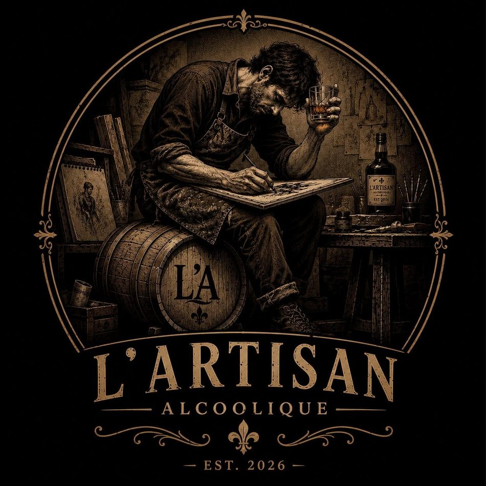
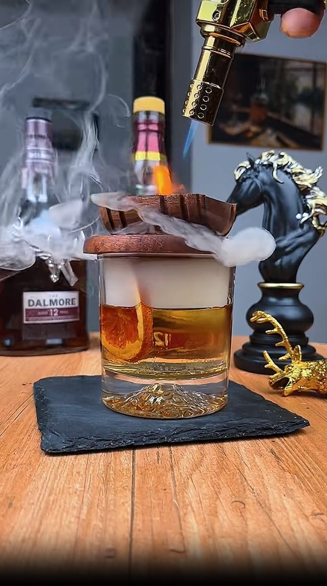
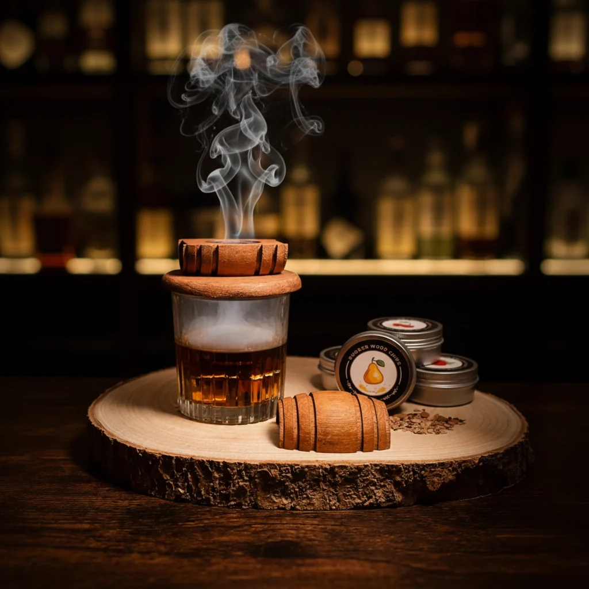
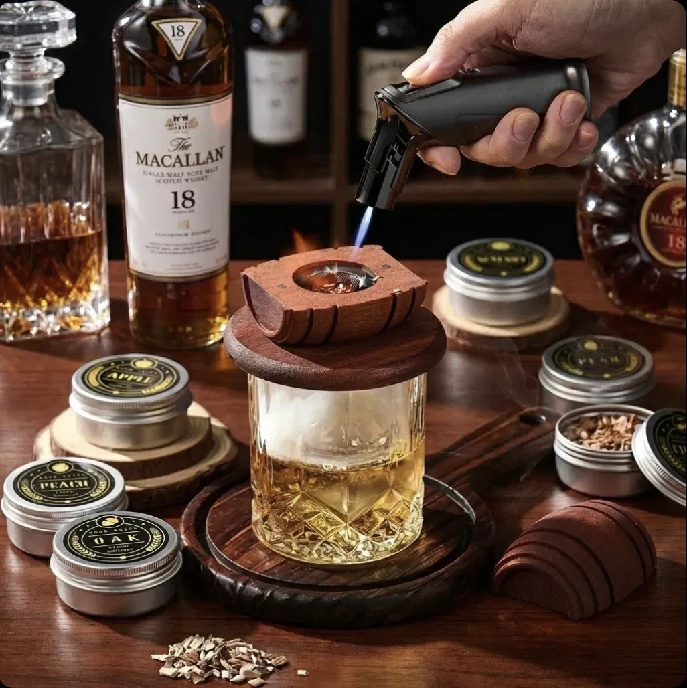
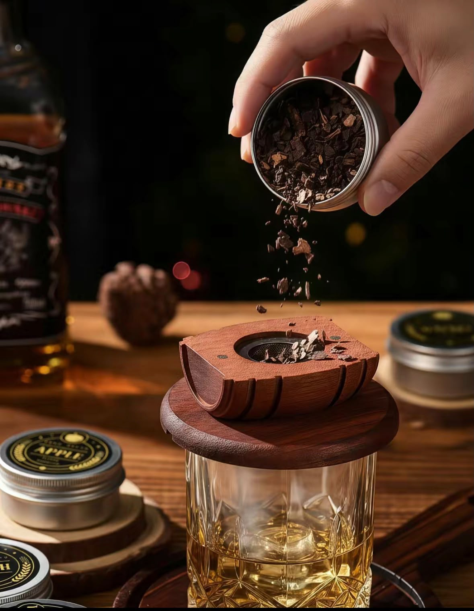
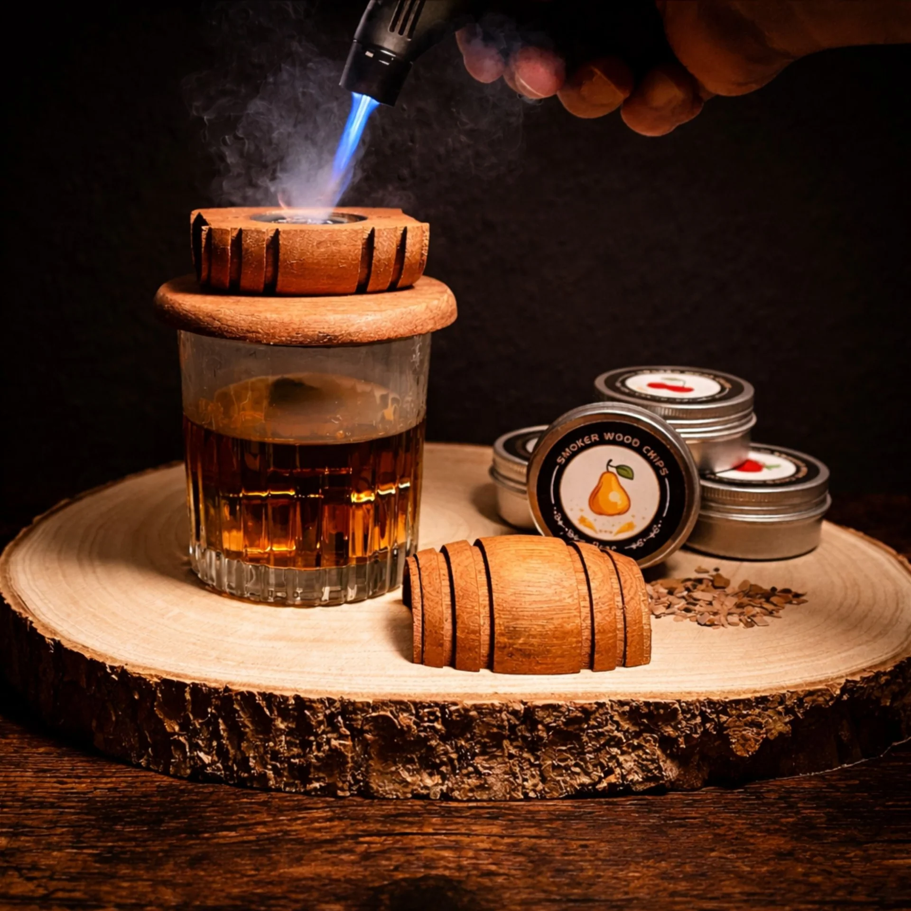
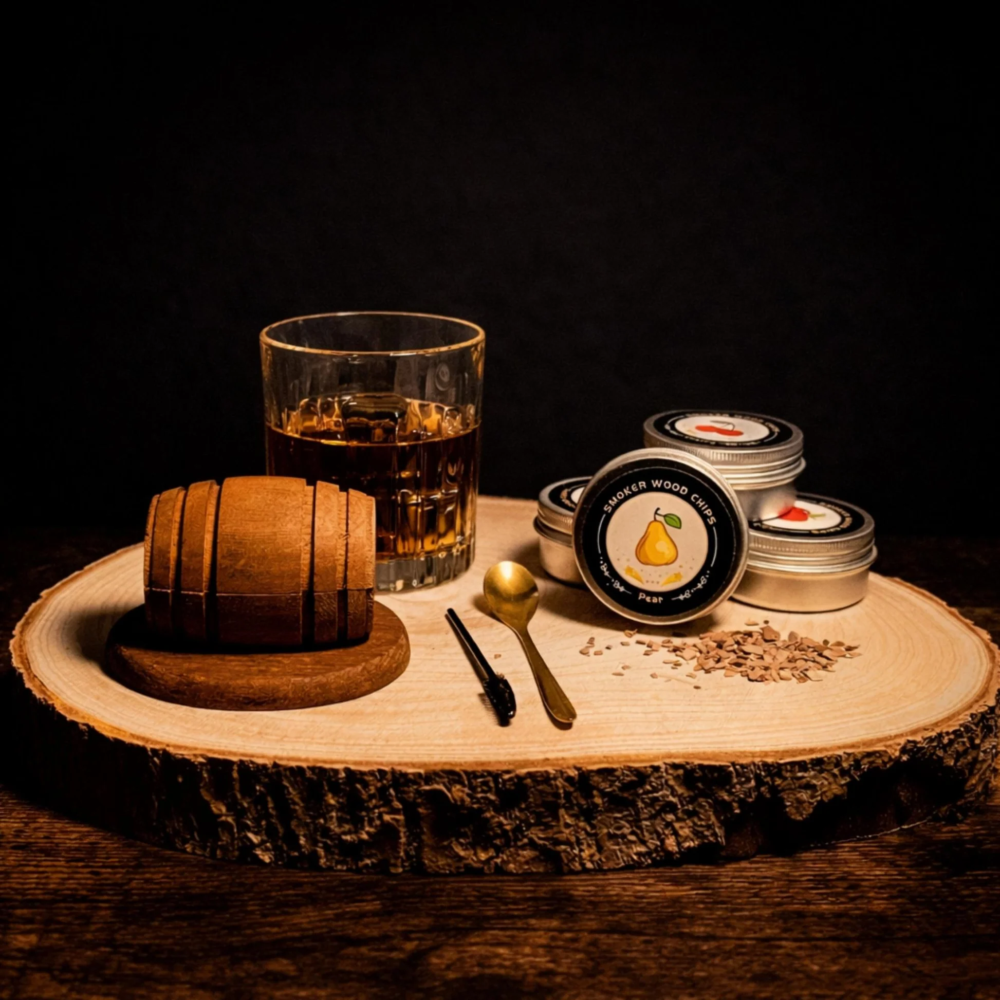

A hand-finished whiskey smoker kit that turns an ordinary pour into a ceremony. Engraved oak. Delivered across Lebanon.
A hand-finished whiskey smoker kit in an engraved wooden case. Everything to turn an ordinary pour into a ceremony.

L'Artisan is the maker who sits with his craft long after the room has gone quiet — patient, precise, a glass within reach. We built this kit in that spirit: not a gadget, but an instrument. Every case engraved, every torch weighted, every flavour chosen — because the difference between a drink and a ritual is care.

Torch in action
Smoke over the glass
First Light
Loading the Chips
The Ignition
The Ritual Set